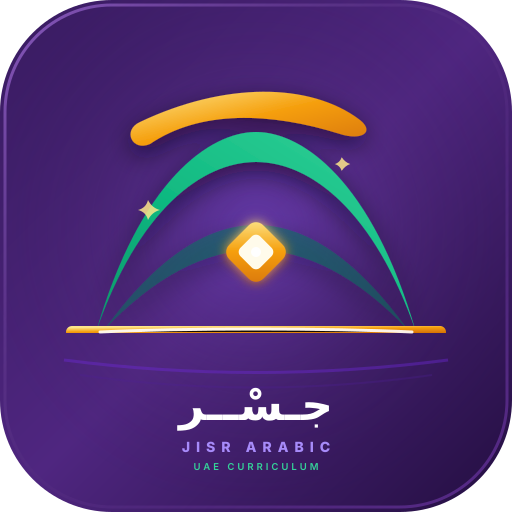
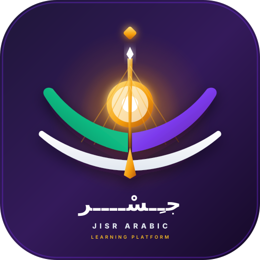
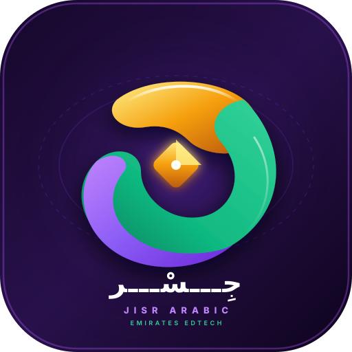

معرض الهوية البصرية وتصاميم الشعارات الرسمية المتكيفة لمنصة وتطبيق جسر (SVG بدقة 512×512 ومطابقة الأيقونات المصغرة Favicon)

تصميم هندسي متقن يدمج القوس المعماري للجسور المعلقة مع انسيابية حرف الجيم (ج) العربي الأصيل. يعتلي القوس نقطة الجيم المصممة كألماسة وضاءة ترمز لنجمة التميز الأكاديمي وإشعاع المعرفة في الإمارات.

ينطلق التصميم من صفحات كتاب مفتوح تنحني وترتقي لتتحول إلى جناحين وجسر معلق يعبر نحو شمس الصباح الذهبية، مجسداً أن قراءة نصوص المنهاج هي الجسر الفعلي الذي يفتح آفاق المستقبل أمام أبناء الوطن.

مونوغرام تجريدي معاصر فائق التماسك، يشكّل شريطاً هندسياً ثلاثي الأبعاد برسم حرف (ج) ورمز اللانهاية (Infinity Loop). يمتاز بأقوى تباين لوني وبصري يجعله بارزاً جداً كأيقونة هاتف ورمز مصغر.
محاكاة بصرية تبيّن كيف تظهر الشعارات بدقة فائقة عند تصغيرها لأصغر مقاسات المتصفح وتطبيقات الجوال: